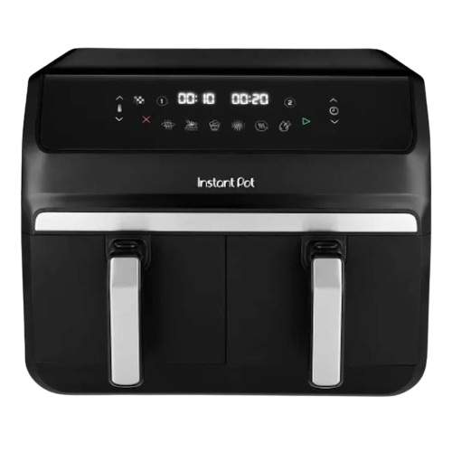
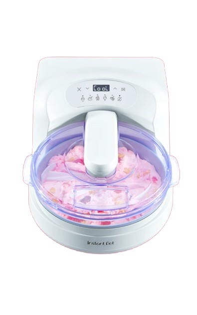
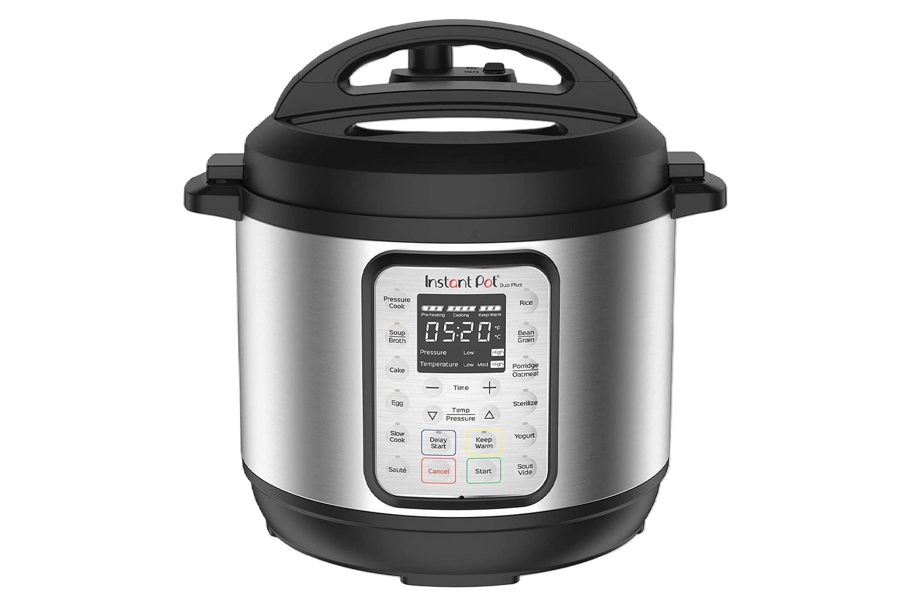
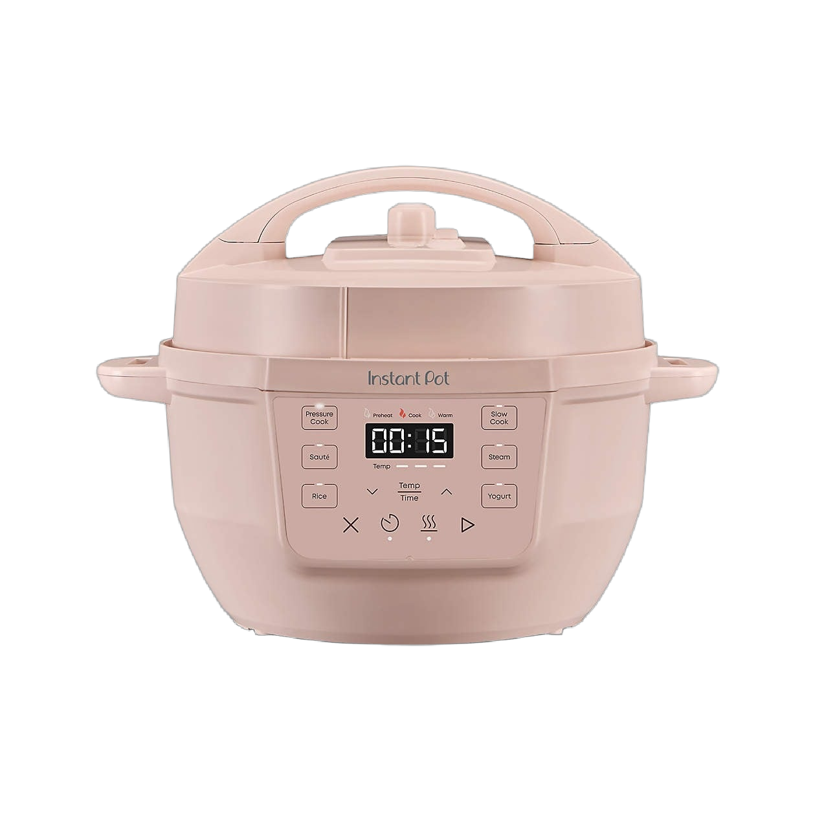

Audiences increasingly trust content that feels useful, achievable, and repeatable. The strategic opportunity is recommendation-aware branding built around creator trust, signal accumulation, and everyday infrastructure.
Instant Pot already has household familiarity, retail awareness, and product legitimacy. The opportunity is to modernize how the brand accumulates trust, recommendation-aware reach, retention, and participation across real creator ecosystems.
The future state is practical magic for real life: a platform-native ecosystem where creator trust, semantic consistency, accessible cooking systems, and lifecycle education help people move from discovery into confident repeat use.
This plan focuses on six operating priorities: clarify platform identity, improve paid and organic discovery efficiency, build repeatable creator ecosystems, strengthen onboarding and retention systems, stabilize attribution and executive reporting, and expand participation systems that turn customers into recurring contributors.
The current state challenge is ecosystem fragmentation. Platform signals need stronger consistency, creator content needs stronger structure, and discovery pathways need clearer connections to onboarding, retention, and repeat participation.
Are recurring themes, visuals, CTAs, and creator messages consistent enough for platforms to classify the brand clearly?
Does the brand repeat recognizable language around cooking confidence, real kitchens, accessibility, meal systems, and everyday utility?
Does each platform receive formats that match how users actually watch, save, search, comment, and return?
Do social posts, creator links, product pages, recipe content, and email flows connect into one coherent customer path?
Do creator partnerships build recognizable trust over time?
Does the post-purchase experience help people learn, use, repeat, and advocate?
Instant Pot’s strongest assets are category legitimacy, broad household familiarity, strong retail presence, and real product utility. The product already solves everyday constraints around time, space, budget, confidence, and cooking consistency. That makes the brand unusually well positioned to shift from appliance promotion into everyday cooking infrastructure.
The rebuild opportunity centers on stronger platform-native formatting, clearer creator execution, richer product presentation, higher participation density, and stronger connections between discovery, ecommerce, onboarding, and lifecycle retention.
This plan focuses on six operating priorities: clarify platform identity, improve paid and organic discovery efficiency, build repeatable creator ecosystems, strengthen onboarding and retention systems, stabilize attribution and executive reporting, and expand participation systems that turn customers into recurring contributors.
This section works as a larger audit. It shows where platform-native discovery breaks down and where trust is built. It also identifies which content systems can compound into recommendation-aware branding and lifecycle retention. YouTube is underusing short-form content, and the content stack should cross-post more consistently across Instagram, TikTok, and YouTube Shorts with more creator collaboration across all three platforms.
Social listening should track how people actually name, remember, and search for the brand. The recurring “Instapot” shorthand is a brand recognition signal. If people repeatedly use the wrong name while discussing the product, the brand can use that behavior as a listening cue for search strategy, social content, SEO, creator prompts, and playful audience education.
This is the kind of insight that makes Reddit and community listening strategically useful: it reveals how the brand lives in public language.
This measurement framework treats digital ecosystems as a connected creator operating system. Visibility tracks exposure. Resonance tracks usefulness. Participation tracks repeat behavior and business value.
ROAS, CAC, LTV, repeat purchase rate, product-page conversion rate, retailer referral conversion, affiliate revenue contribution, affiliate conversion rate, email/SMS retention revenue, lifecycle revenue, creator-attributed conversions, onboarding completion, UGC submissions, creator remixes, creator cohort retention
save rate, share rate, watch retention, completion rate, average watch duration, repeat viewers, comment quality, conversation depth, carousel completion, recipe content engagement, creator engagement quality, topic cluster strength
impressions, reach, paid reach, organic reach, video views, profile visits, creator content reach, creator content impressions, search impressions, Pinterest impressions, YouTube search impressions, branded search volume, share of voice, content distribution volume
Visibility shows whether the brand is being found. Resonance shows whether people find the content useful enough to save, share, watch, discuss, and remember. Participation shows whether the ecosystem is creating repeat behavior, creator continuity, and revenue value through conversion, retention, affiliate performance, creator continuity, and lifecycle growth.
Improve return on ad spend through stronger creative testing, creator-native hooks, audience segmentation, and paid/organic learning loops.
Lower acquisition cost by improving landing-page continuity, creator-assisted conversion, lifecycle capture, and retailer/DTC pathway alignment.
Increase high-intent engagement through recipe education, troubleshooting content, practical cooking systems, and repeatable creator formats.
Grow lifecycle-driven revenue through onboarding flows, repeat-use education, segmented recipe journeys, and post-purchase confidence building.
Improve creator performance through recurring cohorts, stronger briefs, affiliate tracking, and repeat creator participation.
Establish baselines for recipe SEO, YouTube search, Pinterest traffic, retailer referrals, product-page sessions, and QR/onboarding pathways.
The long-term goal is a recognizable participation ecosystem. Creators reinforce customers. Customers reinforce employees. Search systems reinforce retail experiences. Lifecycle education reinforces repeat use.
The executive reporting layer should translate platform activity into operational decision-making. Reporting should connect creator performance. It should connect lifecycle revenue. It should connect participation health, attribution quality, search visibility, and retention behavior into one ecosystem view.
Modern platforms reward familiarity and repeat recognition. Signal accumulation happens when recurring visual systems reinforce trust. Recognizable creator formats reinforce retrieval. Semantic consistency reinforces memory. Repeat audience behavior and participation loops reinforce one another across platforms over time.
Help people cook more consistently and confidently. Support affordability and sustainability in the kitchens they already have. Instant Pot becomes flexible everyday infrastructure for small spaces, busy schedules, shared homes, beginner cooks, accessibility needs, and lower-friction electric cooking.
The visual opportunity is warm, useful, tactile, internet-native, and recognizable without becoming sterile or overly polished. Instant Pot can feel like practical cooking systems for real kitchens. The visual system should prioritize cozy realism, tactile food, creator-native tutorials, practical kitchens, and editorial restraint.
Moving from one-off sponsorships to long-term trust ecosystems. Patterns build recognition. Recognition builds reach.
The Mila Framework shows how a real person, recurring recipe lane, and specific product use can create human context. For Instant Pot, the opportunity is to support recognizable personalities with repeatable formats and lightweight creative structure.
Employee advocacy should move through four stages: discovery, support, governance, and amplification. Start by identifying employees with existing cooking habits, hobbies, teaching instincts, or niche expertise. Provide lightweight creative support, simple content prompts, product guidance, and optional editing help. Governance protects authenticity, disclosure, brand safety, and employee comfort. Amplification connects the strongest employee content to paid, organic, retail, email, and community channels.
The creator lifecycle should include discovery, onboarding, education, co-creation, measurement, retention, affiliate integration, and ambassador development. This turns influencer marketing from a campaign expense into repeatable trust infrastructure.
The proposal should treat recurring formats as infrastructure. Recommendation systems reward semantic consistency, recognizable lanes, and clear repeat behavior.
Employee Expertise Series examples include engineer cooks, customer support favorite recipes, designer meal prep, employee cultural recipes, and “what we actually cook at home.” These formats make internal expertise visible without forcing corporate thought leadership.
Each recurring series should include a remix pathway so creators and customers can adapt the format. Examples include “your first 10 meals,” “tiny kitchen dinner,” “budget batch cook,” “what I make when I have no energy,” and “one-pot family reset.” Participation turns repeatable formats into distribution infrastructure.
The Living Recipe Library should function as a searchable education ecosystem. It connects recipe SEO, troubleshooting, product onboarding, YouTube playlists, FAQ pages, creator tutorials, and lifecycle email flows into one retrievable knowledge system.
recipe SEO clusters, AI-search retrievable FAQs, YouTube retrieval ecosystems, and searchable troubleshooting infrastructure should work as one connected system.
First 30 Meals onboarding, seasonal participation loops, UGC recipe submissions, and lifecycle email/SMS flows should create repeat return behavior and confidence after purchase.
Participation systems give audiences simple ways to contribute and return. Strong formats include seasonal cooking challenges, community recipe submissions, creator-led prompts, first-apartment cooking journeys, small-space meal prep, and recurring customer stories.
Circular infrastructure should connect sustainability to practical affordability. Refurbished products, trade-in concepts, reuse partnerships, nonprofit or community kitchen programs, and student or first-apartment cooking initiatives can position Instant Pot as durable everyday infrastructure with long-term utility.
This role should operate as a connective layer across ecommerce, analytics, lifecycle marketing, creative, customer support, retail partnerships, and creator operations. The goal is to reduce fragmentation by aligning campaign language, product-page content, creator briefs, email flows, tracking links, reporting definitions, and customer feedback loops.
Retail strategy should connect the physical shelf to the same education system customers see online. QR onboarding, retailer-specific creator content, product-page recipe modules, localized creator campaigns, in-store education, and retail media content should all reinforce the same practical magic positioning.
Content intelligence should track watch duration, saves, repeat viewers, creator overlap, search traffic, retention patterns, topic clusters, and recurring audience questions. The executive reporting layer should translate these signals into retention value, creator ROI, participation health, lifecycle impact, and operational efficiency.
Establish KPI baselines. Audit current platform performance. Review paid and organic alignment. Map ecommerce pathways. Assess attribution reliability. Identify immediate quick wins.
Conduct brand signal and aesthetic audits. Review aspirational and practical content side by side. Review semantic consistency. Identify visual gaps. Create a current and future feed direction.
Build a social listening framework across Reddit. Extend it through TikTok comments, YouTube comments, Pinterest search behavior, Amazon reviews, customer service themes, and affiliate creator feedback.
Stabilize KPI definitions. Review UTM hygiene. Assess GA4 and ecommerce attribution. Create a creator ROI framework. Define the executive reporting cadence.
Define the Practical Cooking Systems messaging architecture. Build platform-specific voice guidance. Create a semantic keyword map. Align the visual direction with real-life utility.
Build creator tiers. Build influencer cohorts. Build employee advocacy workflows, onboarding prompts, governance rules, affiliate integration, and creator KPI dashboards.
Create the Instant Pot video taxonomy, define short-form and long-form content roles, build YouTube/search retrieval pathways, and map the Living Recipe Library education system.
Design participation rituals, UGC prompts, seasonal cooking challenges, community recipe submissions, Reddit participation workflows, and creator-led community journeys.
Launch an experimentation framework for hooks and formats. Test creator categories, educational framing, search-first content, onboarding sequences, and participation prompts.
Build First 30 Meals onboarding. Build lifecycle email and SMS journeys. Build accessibility content systems. Build apartment cooking pathways. Build circular or refurbished product concepts.
Present KPI movement. Present creator ROI findings. Present participation health. Present lifecycle performance. Present budget recommendations. Present cross-functional workflow improvements.
Present final 90-day findings. Prioritize the 12-month roadmap. Identify scalable creator and retention systems. Define the next phase of retail, AI-search, lifecycle, and participation infrastructure.
Examples of platform-native posts, creator formats, and audit screenshots that clarify current strengths, weaknesses, and format gaps.
Reference content showing strong utility framing, search retrieval, or creator-native behavior worth preserving and scaling.
Reference examples of weak hooks, generic product presentation, scripted influencer language, or broken discovery-to-retention pathways.
Inspiration boards for cozy realism, tactile food photography, charm motifs, practical kitchens, and editorial brand restraint.
Research covering creator categories, recurring format lanes, cohort opportunities, affiliate structures, and trust-building precedents.
Conversation mining, recurring questions, pain points, language patterns, and product misconceptions gathered from community discussion spaces.
Reference definitions for measurement baselines, reporting logic, creator ROI framing, and the ecosystem-level KPI hierarchy.
Examples of recurring series, remix pathways, employee expertise formats, and search-first educational content structures.
Reference flows for onboarding, post-purchase education, recipe progression, retention messaging, and repeat-use systems.
Notes and mockups related to AI-search optimization, circular product systems, retail education, first-party audience infrastructure, and creator ambassador programs.